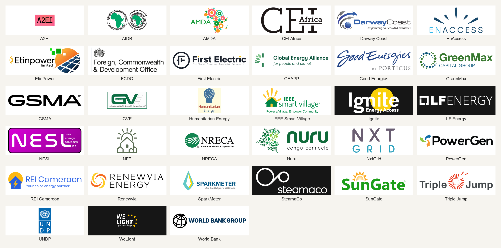

Disconnect
- Remote or local meter disconnect
Open Metering Strategy · 30 Sep–1 Oct 2026 · Nairobi · hosts A2EI and EnAccess · workshop page
← Back to Meeting Notes · Workshop page
Developing and maintaining an open-sourced server that can operate offline and in the cloud, and can talk to the various OEM gateways and DCUs.

One open management system. A pluggable driver per meter type. Gateways that can hold more than one driver. Connectors for known OEMs, and room for third parties to add more. It runs on site and in the cloud. Near-term baseline: open connectors for SparkMeter and SteamaCo fleets already in the ground. Keep the work already done. Other meters in urgent need can be added. Open core, not full open source. OMS is the metering minimum. Companies sell what sits on top. Roadmap Phase 1 is that installed base. Phase 2 is the open mini-grid core. An IEEE village standard is a later milestone.
The question was how operations continue when the internet is down. The room did not treat the two approaches as a permanent either/or. The lean was to make offline capability an option. One company can have sites with a link and sites without one at the same time. Start with a stage that works, and do not design the next stage out.
| What it does | Cost named in the room | |
|---|---|---|
| Edge computing on the grid | An on-site system keeps operating while the link is down. TC 2.0 already draws that for GroundBolt: the uplink can fail while local prepaid continues. | Higher complexity and cost. |
| Split continuity from live data | Accept gaps in the data. Sync when the link returns. Vending continues with STS tokens, typed in by hand if needed. Token path, including SMS: 28 May topology. | Narrower than a full edge system. Still needs the grid to be designed for that gap. |
Where the headend sits is the same split. SparkMeter runs the command center on site: wallets, credit countdown, time-of-use, customer list. Offline, then sync when the link returns. SteamaCo runs it in the cloud: the meter waits for a remote command, and an outage blocks that. Cloud-first design was called a known failure for this sector. An outage stops vending, and it also stops onboarding, tariff changes, and other work that waits on the link. One Madagascar case was operators connecting about once a month to sync. Energy used without payment, or payment taken without energy, lands on the developer.
Keep the two offline stacks apart. GroundBolt keeps local prepaid when the uplink fails, and those SM meters do not decode STS. STS-through-the-gap is the other path. Both can sit in one company. Neither is monitoring. A control loop cannot use that gap. Service can continue while history waits.
Mini-grid platforms bundle the stack into one product. That sells. It also locks the operator in. The server this note is about is the headend, plus the hop from the gateway up to it. Village Metering draws the same split: SteamaCo, SparkMeter, EnAccess, and an OpenAMI path.
Sit above the MDMS. Not the server.
Necessary for the head-end. Keeps the history of reads the headend collected, checks each read, drops or repairs a bad one, and files them by meter and time.
The open server. Command center. On site, in the cloud, or both. One management system, a driver per meter type.
Priority hop named in the room. This is the comms the server has to speak.
Collects meters, because a meter often cannot reach the cloud from a rural site. Local, cloud, or hybrid. Can hold more than one driver. Stack notes: Open Metering Infrastructure · SparkMeter.
Room: proprietary library for gateway-to-meter communication. Free to use. Open above it, proprietary below it. TC 2.0 diagram: driver from the USB gateway into GroundBolt. TC 2.0 full host.
Registers electricity flow. Can open or close the customer connection. Names and the disconnect object: register checklist · DLMS/COSEM.
Comms the server has to carry, from the priority-1 list on the Features MVP shortlist:
On this wiki, DLMS/COSEM sits at the meter and the DCU. The DCU is client to the meter and server toward the head-end. North of the gateway the payload is the register checklist, not a second object model. One northbound shape: the gateway publishes the same keys so a head-end survives a meter OEM change. VMRS is the draft of that shape. This work should not mint a second register standard. Ask for a short list, not a utility ICD. Tier A names are already settled. 1.8.0 is import kWh. Tier B is where makers still diverge inside “DLMS”: credit, tamper bitmap, disconnect, serial. Ask for the companion-profile certificate, or one ICD excerpt per model. A brochure logo is not the certificate. VMRS is a draft shortlist, not a published standard. 96.1.0 is the billing-period counter, not the serial.
Another team read frequency, voltage, and consumption from 5 meters through an off-the-shelf gateway and a normal cloud path. Azure and MQTT were the example. Readable registers mean the data can move.
Hardware lock-in and software lock-in were split on purpose. A phone analogy used in the room: a vendor can keep proprietary hardware if the interface above it is open. Hidden registers make the meter a brick when the vendor stops. That gap is what the register checklist is for.
| Level | What fails | Matching response |
|---|---|---|
| 1 — blackout | Vendor system down. Operators see errors. Meters unreachable. | Escrow is the fallback when a vendor stops operating. |
| 2 — stranded hardware | Operator wants to leave. Meters stay tied to the old platform. | Migration means new software, same meters. Possible in theory for some stacks. Not proven at scale. |
| 3 — mixed fleet | Operator wants another brand under one platform. | Universal headend, or one management system with a driver per meter type. This is the server. |
A vendor switch uses a Key Change Token sequence, applied in order. It can go out remotely or be typed on the customer keypad. Provision that access when the meter is made, so the switch does not need a site visit. Each meter holds encryption keys tied to a Supply Group Code. The 28 May note already separates STS keys from OEM keys and from DLMS keys. ThunderCloud 2.0 and GroundBolt are open. SteamaCo’s migration path is still being built. DLMS register codes come from the manufacturer on request, and they are not always right.
| Cut | What it builds | Limit named in the room |
|---|---|---|
| Above the headend | Open MDMS, CRM, outage and revenue management on an existing headend. | Still locked at the hardware and gateway. |
| The headend | One headend that can speak SparkMeter, Calin, and others. Both are in the vendor study. | Called boiling the ocean. DLMS named as the possible lever. |
| Below the headend | Free meter-to-gateway comms: registers, a SparkNet equivalent (TC 2.0), LoRaWAN. | High complexity. Needs operator skill or a strong open effort. |
Tests proposed for any cut: which lock-in it addresses, whether it reinvents a commercial-scale standard, and how much burden lands on the operator.
One framing: write the standard for new meters. Priority hop is gateway to cloud. Start with DLMS, upgraded for this ecosystem.
The other: open connectors for SparkMeter and SteamaCo fleets already in the ground. DLMS as leverage for a universal headend, and as manufacturer register codes.
The near-term baseline that landed is the second one. KPLC, at about 8 million meters, can impose interoperability on manufacturers. A mini-grid operator does that only together with others.
Grid-control profiles every 5–15 minutes. The checklist leaves the full profile buffer out of the northbound payload. On the pre-session vote sheet, hourly or 15-minute interval data (5) outscored event data (3), daily aggregates (3), and 1-minute or finer (2). Raw data can stop at the feeder. Alarms still need a near-real-time signal. Reversed CTs and negative SparkMeter totals already made datasets unusable.
MDMS keeps the history of reads the headend collected, checks each read, drops or repairs a bad one, and files them by meter and time. Billing and reports use that file. Day 1 called this processing, cleaning, and organizing raw meter data, and put OMS, CRM, revenue, and outage above it. The small group marked MDMS necessary for the head-end.
Score the reading at the layer that holds it. The meter holds the register. The pole gateway or DCU normalizes it. The headend collects it. The cloud syncs a copy, and that copy can lag. OpenAMI is that path: first-km hardware, then an aggregation hub, then a backend, then billing. A cloud chart does not prove the meter has the object.
What must come in near real time. The sheet’s note: flexibility to set what data comes in when, and from what. Use case decides.
Monitoring already in the ground: intelligent grid monitoring via existing infrastructure; GIS, started basic (the village pack is that map; a country building estimate such as Open Energy Maps sits above it); open data transparency (API).
Morning data the layers above still need from this file: vending transactions, number and size, for bankability; daily totals by customer group, for planning.
Reading marks. Row colors match the register checklist. For each row the group was asked which layer holds it, and whether a day offline, or a month offline, still leaves it true.
| Reading | OBIS on the checklist | Where it lives for the server |
|---|---|---|
| Active import kWh | 1.8.0 | Billing history can wait for the link. Say so if someone still settles it on site. |
| Instantaneous power | 1.7.0 | Fresh if load limit follows generation. A monthly sync cannot close that loop. |
| Voltage L1 | 32.7.0 | Same loop. L2/L3 only if the service is wired that way. |
| Clock | 0.0.0 | A late energy sync without a clock is an argument about whose timestamp. |
| Serial | 0.0.96.1.1.255 typical | Identity, not a stream. The name varies by maker. 96.1.0 is the billing-period counter, not the serial. |
| Alarm / tamper | 96.5.0 | Bitmap comes from the ICD. Fresh only if someone on site can act on it. |
| Remaining credit | 96.8.0 | Fresh if vending continues offline. The keypad (CIU) may be the only place it lives. |
| Disconnect state | 0.0.96.3.10.255 | A state, not a history. The customer already feels it. The cloud copy can lag. |
| Last token | 96.11.5 | Optional. Hand it to the vending room unless this group is writing an audit. |
Local dynamic control landed as a real need: load limiting that follows generation, so a site stays commercially viable without an oversized plant. Meters have to answer those conditions. The loop uses a fresh local reading. Instantaneous power and voltage are that reading. The workshop page already recorded a pre-session vote for time-of-use and load limits. Outage and control split the same way as the server: field work continues offline; cloud work waits on the link.
Field · offline
Cloud · internet
The open core does not hold all of the business logic. Tariffs, CRM, and payment rules sit above it. The core stays extensible so an operator can plug in their own modules. The infrastructure has to be able to carry the business model. How that model is built is the operator’s choice. After SteamaCo stopped mini-grid development in 2021, Nimbus became a pass-through. Customers, PowerGen among them, built their own layers above it. Nimbus in the vendor study is SteamaCo’s AMI head-end. Company filings and the product claims: ISV-TRD-002.
About ten tariff schemes have been built. About three are actually used. Requests for more elaborate tariffs came from developers and rarely ran at scale. The staged path that was endorsed: a tight first version, built so it can grow, then revisit.
Operator path, in order: vending (STS, collect revenue), then monitoring (usage and events), then control (run the grid). STS is a vending standard, not a comms standard. It does not give remote monitoring or control. The interoperability gain named for standard STS: one system vends tokens for more than one meter brand.
2030 exercise. NRECA International was named as technical advisor and validator in the consortium, with A2EI and EnAccess. Silent write, then affinity clustering. Prompt: mini-grid operations in 2030. Roadmap Phase 3 is a later grid-arrival path, not this feature list. Clusters on that sheet:
Data/Monitoring/Analytics and Operational Control are the server. Vending, billing, transparency, and the customer interface sit above it or beside it.
If GroundBolt runs on site, what safeguards sit around meter keys and other sensitive data? Nearby on this wiki: key hierarchies and defense-in-depth layers.
And, from the scope talk: a local management engine, or the STS token stack alone?